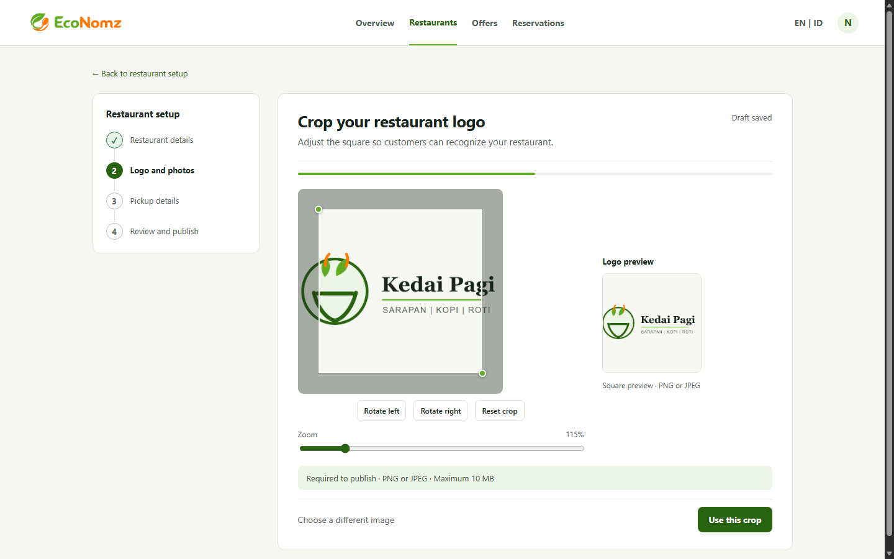

1
Step rail + active editor
A persistent setup rail keeps the owner oriented while the crop task and square preview share the workspace.
Watch for: the rail may take space from image editing on narrower screens.
All three studies preserve the selected “Guided steps + active task” direction. The sample logo is landscape (1200 × 750); square uploads should skip this step. Compare how each balances setup progress, hands-on editing, and the customer-facing preview.
Confirmed: Option 3 remains the selected layout with the corrected landscape sample; square uploads should skip cropping. These are desktop north-star studies, not final production screens.